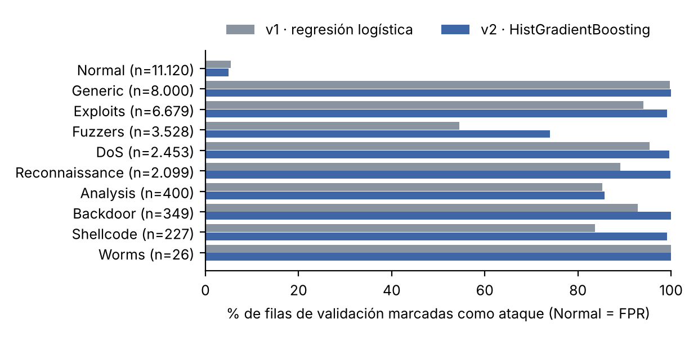
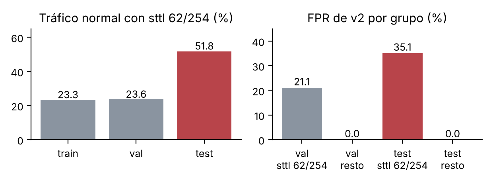

Se usan los splits publicados de UNSW-NB15: UNSW_NB15_training-set.csv (175.341 filas) y
UNSW_NB15_testing-set.csv (82.332 filas), ambos con 45 columnas, descargados el 23-10-2026 de la fuente
oficial de UNSW. Sus SHA-256 coinciden con las huellas del anexo del enunciado y se versionan con DVC
(data/original.dvc). El objetivo es label (1 = ataque, clase positiva); se excluyen de las
entradas id (identifica la fila), attack_cat (revela la respuesta) y label. Quedan
42 entradas, 3 categóricas (proto, service, state).
| Hallazgo de la auditoría | Entrenamiento | Test | Política |
|---|---|---|---|
| Faltantes | 0 | 0 | — |
| % de ataques | 68,1 % | 55,1 % | Se reporta; métricas por clase, no accuracy |
| Filas que repiten un vector de entradas | 74.301 (42,4 %) | 28.386 (34,5 %) | Se conservan y se agrupan por vector (group_id) |
Grupos con label 0 y 1 a la vez | 229 (940 filas) | 6 (14 filas) | Se excluyen de train/val; test completo |
is_ftp_login > 1 (variable binaria) | 22 | 4 | Se acota a {0, 1} en todas las particiones |
Valores de state solo en test | — | ACC, CLO | El codificador ignora o agrupa valores no vistos |
Particiones. Train y validación salen solo del archivo de entrenamiento, con StratifiedGroupKFold
(5 folds, estratificado por attack_cat, semilla 42; el fold 0 es validación): 139.520 y 34.881 filas, ambas
con 68,1 % de ataques. Ningún vector de entradas aparece a la vez en train y validación. Se conservan los
duplicados porque el test tampoco está deduplicado y así la validación refleja la misma distribución; agruparlos impide la
fuga. El test se reserva completo. El 8,1 % de sus filas (6.646) comparte vector con train y el 2,0 % con validación: se
reporta y no se eliminan filas. La limpieza es determinista y sin estado; codificación y escalado viven dentro del
Pipeline de cada modelo y se ajustan solo con train. Los datos preparados (data/prepared,
dvc.lock) son la segunda versión de datos; ambas están en DagsHub y la auditoría completa en
evidencias/auditoria.json.
Cuatro configuraciones de dos familias, con las mismas particiones, semilla 42 y regla de umbral. Cada run de MLflow
registra hipótesis, cambio, parámetros, commit Git (fecc329, árbol limpio), versión DVC, métricas de
validación y el modelo completo (formato skops, con su SHA-256). La exportación está en evidencias/mlflow/ y
la tabla en evidencias/experimentos.csv.
| ID | Hipótesis y cambio | Umbral | Recall | Precision | FPR | Macro-F1 | FPR @0,5 |
|---|---|---|---|---|---|---|---|
| exp01 | Referencia lineal: regresión logística, one-hot + estandarización | 0,773 | 0,896 | 0,972 | 5,4 % | 0,902 | 18,0 % |
| exp02 | Variables muy asimétricas: + log1p antes de estandarizar | 0,774 | 0,913 | 0,975 | 5,1 % | 0,916 | 13,7 % |
| exp03 | Interacciones no lineales: Random Forest (150 árboles), categóricas ordinales | 0,648 | 0,953 | 0,976 | 5,1 % | 0,945 | 9,6 % |
| exp04 | Boosting más compacto: HistGradientBoosting con categóricas nativas | 0,639 | 0,956 | 0,976 | 5,0 % | 0,948 | 8,6 % |
Métricas de validación (34.881 filas) con ataque como positivo. Si una razón tiene denominador cero vale 0 y queda marcada; no ocurrió. FPR @0,5: con el umbral por defecto.
Interpretación. Las hipótesis se confirmaron; la de exp01, en parte: es una base razonable, pero con más errores que los árboles. log1p mejoró al modelo lineal (+1,8 pp de
recall con igual FPR), pero el mayor salto fue cambiar de familia (+4 pp más con árboles). HistGradientBoosting iguala al
Random Forest con un artefacto de 2,2 MB frente a 52 MB y se entrena en 3 s. Por categoría (figura 1), los errores se
concentran en Fuzzers: los modelos lineales detectan el 55 % y los de árboles el 72–74 %; Analysis
queda cerca del 85 % en todos. Con el umbral de 0,5, todos los modelos tendrían una FPR de entre 8,6 % y 18 %; por eso el
umbral se elige explícitamente.

evidencias/errores_por_categoria.csv.El equipo de seguridad tolera un número limitado de alertas sobre tráfico normal. La regla, fijada antes de entrenar
(params.yaml): máximo recall de ataque con FPR ≤ 5 %, sobre una rejilla de paso 0,001; ataque si
score_attack ≥ umbral. Para no gastar la validación, el umbral se elige con predicciones out-of-fold
sobre train (5 folds agrupados con los mismos grupos que el split). La validación queda limpia para comparar modelos y
confirma que el umbral se traslada: la FPR resultante está entre 5,0 % y 5,4 %.
v1 es la primera solución funcional: exp01 (regresión logística, umbral 0,773). v2 se eligió solo con
validación, con la regla de configs/seleccion.yaml: mayor recall entre las configuraciones con FPR de
validación ≤ 5,5 % (el 5 % objetivo más media unidad de tolerancia, porque el umbral se fijó en OOF). Ganó exp04. La
decisión se guardó en evidencias/seleccion.json y quedó congelada en el commit adcd955, antes de
leer el test.
| Validación | v1 (exp01) | v2 (exp04) | Cambio |
|---|---|---|---|
| Recall de ataque | 0,896 | 0,956 | +6,0 pp |
| Precision de ataque | 0,972 | 0,976 | +0,4 pp |
| FPR | 5,44 % | 4,99 % | −0,45 pp |
| Macro-F1 | 0,902 | 0,948 | +4,6 pp |
| Falsos negativos / falsos positivos | 2.483 / 605 | 1.045 / 555 | −1.438 / −50 |
Qué cambia: el modelo (regresión logística → HistGradientBoosting), en consecuencia el preprocesamiento (one-hot + estandarización → ordinal) y el umbral (0,773 → 0,639); la regla del umbral es la misma. Qué mejora: los falsos negativos caen a menos de la mitad, sobre todo en Fuzzers (55 % → 74 %), Shellcode y Reconnaissance, con menor FPR. Qué empeora: v2 es menos interpretable (sin coeficientes por variable) y pesa 2,2 MB frente a 0,3 MB. Errores aceptados: ~5 % de conexiones normales marcadas y ~26 % de Fuzzers sin detectar.
Ambas versiones están en Hugging Face con model card, configuración y umbral, dependencias fijadas y referencias a Git, DVC y MLflow:
| Revisión de Hugging Face (SHA completo) | Run de MLflow | SHA-256 del modelo | |
|---|---|---|---|
| v1 | 896ee3984613e60d2af1c5297163524216fec34b | b1c856bd… | feb7d024…1771 |
| v2 | 424eef599abdce7630cfc369505487755b9763f4 | 98001a52… | 562ba1bc…489c |
La v2 congelada se descargó de Hugging Face por su SHA (con el hash del modelo y el umbral verificados) y se evaluó una
sola vez sobre las 82.332 filas del test, sin eliminar ninguna. Las predicciones por fila están en
evidencias/predicciones-test.csv y las métricas en evidencias/metricas-test.json; recalculadas con
scikit-learn desde el CSV, coinciden exactamente.
| Métrica | Validación | Test |
|---|---|---|
| Recall de ataque | 0,956 | 0,968 |
| Precision de ataque | 0,976 | 0,867 |
| FPR | 5,0 % | 18,2 % |
| Macro-F1 | 0,948 | 0,898 |
| ROC-AUC | 0,994 | 0,983 |
| Test | Predice normal | Predice ataque |
|---|---|---|
| Normal (37.000) | 30.261 | 6.739 |
| Ataque (45.332) | 1.454 | 43.878 |
El resultado empeora en FPR y se conserva. La capacidad de ordenar casi no cambia (ROC-AUC 0,983), pero con el
umbral congelado la FPR pasa de 5 % a 18,2 %. El análisis posterior (evidencias/analisis-test.json) lo
explica: en test, el 51,8 % del tráfico normal tiene sttl 62 o 254, valores típicos de los equipos
atacantes del banco de pruebas, frente al 23 % en train y validación. Los 6.739 falsos positivos están en ese
grupo; fuera de él la FPR es 0,0 %. El modelo aprendió un artefacto de la topología del laboratorio (el TTL) y el
test tiene otra distribución de tráfico normal. El solapamiento con train no lo explica: las filas no vistas tienen la
misma FPR (18,2 %). No se ajustaron modelo ni umbral después de ver estos resultados.

evidencias/analisis-test.json.| Herramienta | Qué versiona en este proyecto |
|---|---|
| Git + GitHub | Código, configuraciones, parámetros, referencias DVC y evidencias; v1 en el commit b15a8b2 y v2 en adcd955; ambos modelos se entrenaron con el código de fecc329. |
| DVC + DagsHub | Datos originales (23b017bf…dir) y preparados con sus particiones (e2f660e3…dir), recuperables con dvc pull sin la caché original. |
| MLflow | Cuatro runs con hipótesis, parámetros, commit, versión DVC, métricas y modelo; exportados para consultarlos sin servidor. |
| Hugging Face Hub | Dos revisiones completas, identificadas por SHA y tag, con model card que cita commit, versión DVC y run. |
Cadena: commit Git fecc329 → datos DVC e2f660e3…dir → run
98001a52… → revisión HF 424eef59…, unidos por el SHA-256 del modelo
562ba1bc…: el modelo descrito, el descargado y el que produjo las predicciones de test son el mismo
archivo.
Con scripts/recuperacion.sh, en una carpeta y un entorno nuevos y sin cachés: clon del commit
91f71a2 desde GitHub; instalación del lockfile sin caché (298 s); dvc pull desde DagsHub con caché
vacía (10 s; SHA-256 iguales al anexo y a la auditoría); descarga de v1 y v2 por SHA completo sin token, en una caché vacía;
predicción sobre 30 filas fijas de validación (3 por categoría, semilla 42). Comparadas con las salidas guardadas por los
runs originales: mismas etiquetas y diferencia máxima de probabilidad de 1,1·10⁻¹⁶ en ambas versiones (tolerancia
declarada 10⁻⁹). Total: 327 s. Log, entradas, salidas y hashes en evidencias/recuperacion/. Además, reentrenar
exp04 en un clon aparte reprodujo las mismas métricas y predicciones.
sttl, dttl y ct_state_ttl o recalibrar el umbral con tráfico normal reciente;
no se hizo aquí para no usar el test en decisiones.Uso de IA. Se usó Claude Code (Anthropic) para escribir el código, la documentación y el análisis.
Las cifras de este informe provienen de los archivos de evidencias/ y se verificaron con recálculos
independientes. Contribuciones de cada integrante: ver entrega.md.